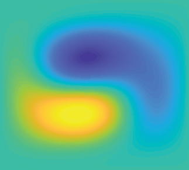
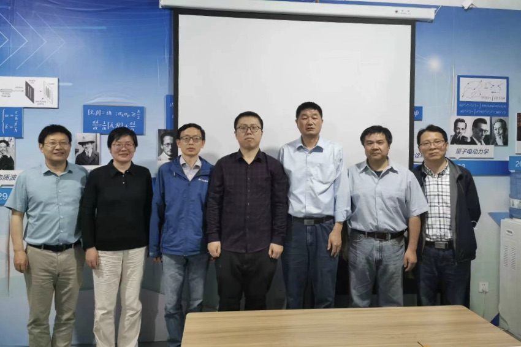
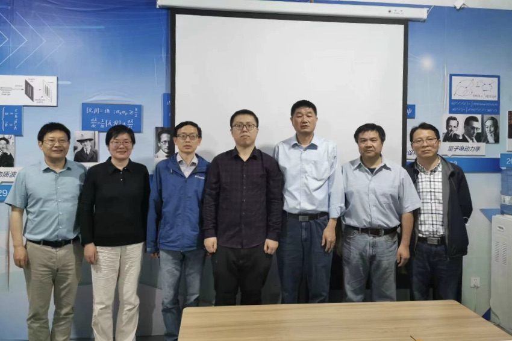

要在人工量子系统中寻找张量磁单极，必须解决两个关键问题：一是如何构造高维参量空间中可控的系统哈密顿量；二是如何测量参量空间中量子态的度规张量，从而得到张量磁单极的拓扑荷。围绕这两个问题，于扬和朱诗亮研究组通过理论与实验紧密合作，在超导量利用超导四能级人工原子在四维参量空间中构造和实现了张量磁单极的等效哈密顿量。
该工作在超导人工原子中实现了参数空间的张量单极子和Dixmier-Douady不变量的测量，这有助于磁单极物理、张量规范场和拓扑物理在人工量子系统中的进一步研究。
此研究成果以 "Experimental Observation of Tensor Monopoles with a Superconducting Qudit"
为题发表在《物理评论快报》上
[Phys. Rev. Lett. 126, 017702 (2021)]，并入选了封面文章和编辑推荐（Editor’s Suggestion）。
 
